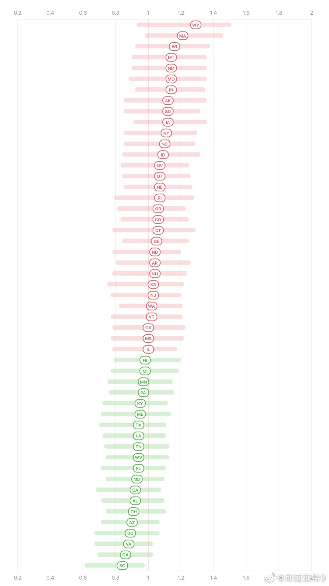

Napa Valley著名的城堡酒庄给大家发信说，他们在大火中遭受了巨大的损失。虽然城堡没有受到损失，但一些其他建筑几乎全部损坏，包括12万瓶酒。Napa Valley这次又够惨的。

斯图亚特9
2020-09-30
斯图亚特9
2020-09-30
美国的华莱士，那水平不比你们高到不知道哪里去了？我张口就骂一晚上。你们啊…… //@polyhedron:用過視頻直播的應該知道有閉麥功能，輪到誰講話的環節讓別人說的聲音傳不出來就行了。能用技術解決的問題怎麼就對國家失望了？
---:抱歉，作者已设置仅展示半年内微博，此微博已不可见。
斯图亚特9
2020-09-30
美国依然有超过一半的州RT值大于1。
- 
斯图亚特9
2020-09-30
??!!!
@新浪财经:
【央行调查：#未来三个月20.1%的居民打算购房#，创年内新高】中国人民银行9月29日发布的《2020年第三季度城镇储户问卷调查报告》显示，本季收入感受指数为49.3%，比上季上升3.2个百分点。这份央行在全国50个城市进行的2万户城镇储户问卷调查显示，未来三个月，20.1%的居民打算购房，创下年内新高，今年前两个季度这一比例分别为19.2%和19.7%。 央行调查：未来三个月20.1%的居民打算购房 创年内新高
央行调查：未来三个月20.1%的居民打算购房 创年内新高  鲸视频v的微博视频
鲸视频v的微博视频
264万次播放
00:52
斯图亚特9
2020-09-30
股市要上天了……